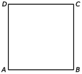

Беседа 2761 от 3877 · Беинса Дуно
Ползата от краката
Добрата молитва.
„Аз в живота ще благувам.“
Ще прочета 12 глава от 1 Послание към Коринтяните.
„Духът Божий.“
Чете се темата: „Ползата от краката“.
Краката са орган на добродетелите. Но краката са органи и на злото. Като пиете студена вода, ще имате един резултат, като пиете топла, ще имате друг резултат. Но водата е същата. Ако турите топла вода, или ако турите ледена вода в устата, да разтопявате, ще имате съвсем друг резултат. Ако вие в света живеете без любов, ще имате един резултат, ако живеете с любов, ще имате друг резултат. Ако живеете без вяра, ще имате един резултат, ако живеете с вяра, ще имате друг резултат. Ако живеете с надежда ще имате един резултат. Ако живеете без надежда, ще имате друг резултат. Сега има една научна страна. Ние вървим по един път на общи резултати. Запример всеки иска да бъде богат, хубаво е да е богат човек, не е лошо. Но богатството е една идея само за човека. Какво ще разбере едно животно като коня, ако го натоварите със злато на гърба му или скъпоценни камъни. Ще съзнава ли коня, че носи някакво богатство? Човек трябва да има особено съзнание.Казвам: Вземете науката. Един човек, ако вземе една книга, ще я оцени. Но ако натоварите едно животно с книги, ще стане ли научено? Няма да стане. Та понякой път, когато говорим за свещените идеи, някои свещени идеи, някои възвишени идеи имат за нас толкоз полза, колкото научните книги върху гърба на някое магаре. Казвате, че човек трябва да бъде добър. Какво разбирате? Вие имате една идея и казвате: „Човек трябва да бъде добър“. Но ако кажете на едно животно, че добро трябва да бъде, какво разбира животното? Понеже всички вие имате особени възгледи за нещата в живота, за някакви идеи, казвам: Всички идеи влизат в стълкновение с нашите възгледи. Всеки един от вас има известни възгледи, особено за доброто, за любовта, за вярата, за надеждата, за учеността. Понятията, които имаме не са лоши. Та казвам: В света ние трябва да се стремим към едно знание, което обобщава, примирява нещата, не да ни отделя. Вие седите и казвате: „Този човек е много добър, онзи човек е лош“, но то е ваше разграничение, че е един човек по-добър. По отношение на вас, излиза по-добър, по отношение на вас повече ви дава, услужва ви, дава ви пари, съгради ви една къща, минава за добър човек. А всъщност, той може ни най-малко да не е добър. Нима онзи вълк, който отхранва децата си, не е добър. Добър е. Спрямо овцете е лош. Онази овца спрямо тревата и тя е лоша, понеже тъпче тревата. Понякой път овцете смачкват най-хубавите цветя. Казвам: Овцете са благородни, но като минават през туй изложение, което дава природата, те стъпкват цветята. Сега, ако тъпчите едно цвете, вие сте една овца. Ако искате да разрушите една идея, вие сте един вълк. Сега някои от вас мислят, че много идеи трябва да имате, но вас ви трябва само една идея; многото идеи развалят човека. В какво седят многото идеи? Я ми кажете един човек, който има 10 идеи. Какви идеи запример? Да кажем вие мислите идеята „лист“. Идея ли е единият лист или едно клонче, идея ли е това? – Или едно дърво идея ли е? – Под думата „идея“, ние разбираме една Божествена форма. Достатъчно е човек да има една идея, не му трябва повече. Любовта, това е една идея, вярата това е една идея, надеждата, това е една идея. Но ако ти имаш Любов, другите идеи сами по себе си идват. Дали ги търсим или не, самият живот при Любовта идва, понеже съставя едно цяло с нея. Като обичаш един човек, той ще дойде при тебе с тялото. Не е тялото човекът, но човекът без тялото ти е непонятен. На земята човек без тяло ще бъде непонятен. Един човек без крака ще бъде непонятен. Без ръце ще бъде непонятен, без очи ще бъде непонятен, без нос, без уста, ще бъде непонятен заради нас.
Да кажем някой казва: „И без любов може да се живее“. Но каква идея ще имаш за един човек, който няма Любов? На какво ще мяза човек, който няма любов, на един мъртъв човек. Може да е облечен със скъпоценни камъни, но от него без любов не може да изкараш нито една дума. Ще мяза на индуските философи, ще бъде мълчалив. Затова един индуски философ пратил един ученик да хвали мъртвите, да им каже най-хубавите работи и виж, казва, какво ще ти кажат мъртвите. Той отишъл и след като ги хвалил, хвалил, ни глас, ни слушание. Тия мъртви не искат да знаят. Ако ние хвалим мъртвите, слушат ли? Ако ги хвалим не слушат, но ако мислим, може нашата мисъл малко да ги съживи. Да хвалиш мъртвите, то е външната страна, обективната страна. Ти казваш: „Той беше много добър човек“. Но това не е мисъл. Ти казваш:„Един отличен, учен човек, като него няма“. То е външната страна. Единственото нещо, от което всичките хора се нуждаят кое е? Писанието казва: „Надпреварвайте се да си давате почит, да се уважавате.“ Казваш: „Защо трябва да уважавам еди-кого си?“ Него като уважаваш, ще почиташ Бога. Като обичаш ближния си, обичаш Бога. Всяко нещо в света, което направиш, Бог, Който е там, Той ще ти въздаде. Ако го обичаш, значи служиш на Бога, ако не го обичаш, значи не служиш на Бога. Ако вярваш в Бога. Да вярваш в един човек. Да вярваме в доброто, което е в него. Под думата „добро“, разбираме – има едно Абсолютно добро, което всичките хора го имат. Някъде има едно добро, което е човешко. Има едно добро в човека, което е ангелско; има добро, което е Божествено. Сега ще ги разгледате, кажете ми по какво се отличава човешкото добро? Човешкото добро е замръзнал лед, замръзнала вода. Ангелското добро е размразена вода. А какво е Божественото добро? Вода, която носи живот на човека. Онези двете са външни условия. Човешкото добро е процес за пречистване на нещата. Ангелското добро е за употребление на нещата. Божественото добро е да внесеш живота. То е най-важното. Божественото добро в света е, което внася живота. Другите са условия. Ако човек е добър по човешки, той само ще филтрира, ще пречиства нещата; ако има ангелско добро, ще има само условия; ако няма Божествено добро, животът не може да дойде в него. Това е едно разграничение само, за да се покаже доброто какво е по същество. Доброто е резултат на Божествената Любов. Доброто е крайният, материален резултат на Любовта. Що е доброто? Крайният резултат на Любовта. (По доброто) се познава, че Любовта действува. Резултат вече е доброто. Следователно, като плод вече е доброто на Любовта. Ние трябва да имаме всичкото уважение към туй добро, понеже, то носи живота. Всеки един плод, това е едно добро, носи живот в себе си. Това е Божествено благо в света. Доброто е, което носи Божественото благо в нас. То сега е само едно понятие. Но сега едно практическо приложение. Някой казва: „Аз съм добър човек“. Ти си добър човек, но се безпокоиш. В доброто няма никакво безпокойство. Ти си добър човек, но се съмняваш. В доброто няма никакво съмнение. Щом се съмняваш в своята кола, че тази кола няма да издържи, липсва ѝ нещо, тогава тя няма да издържи. Или ти си добър, но си слаб човек; в доброто няма слабост. Ти си добър човек, но си сиромах, оплакваш се; в доброто няма сиромашия. Сиромашия, болести, безверие, безнадеждие, безлюбие, противоречия, няма в доброто. Доброто има всичко, то е крайният резултат на Любовта, то е Божественото добро. Та казвам: Щом някой каже: „Имам човешко добро“ – замръзнал е. „Имам ангелско добро“ – взел да се размразява, след туй ще дойде Божественото добро, да го превърне на плод. Туй добро да влезе във вас, във вас трябва да влезе доброто. Божественото добро е едно. Другите две добрини са външни, Божественото е вътрешно. Сега и трите са потребни. Защото човешкото добро филтрира. На земята човешкото добро е необходимо, то е един филтър. Сега доброто е като един инструмент. Имате един инструмент една китара, или цигулка, или пиано. Самата цигулка всичко няма да ви достави. В някой случаи цигулката може да ви бъде полезна. Вие имате една уста, в някои отношения устата може да ви бъде полезна. Кога? Когато вие идете на нивата, устата какво ще каже? Ако каже на нивата: Трябва да се изоре. Но като идеш на нивата, ръцете трява да работят, а устата да мълчи. А понякой път проучваш един предмет – ще говориш, казваш: „Аз трябва да разбирам“. Като кажеш: „Аз трябва да разбирам“, с туй разбирането иде ли? – Сега понякой път вие се намирате, в духовните работи. Има едно състояние, болезнено състояние, то произтича, че религиозните хора стават чрезмерно чувствителни. Техният етерен двойник, или астралният двойник се отделят и излизат навън. И вследствие на това претърпяват големи несгоди и страдания. Страданията се дължат, че етерният, астрален двойник – обвивки са те, и излизат повече отколкото трябва навън, следствие на това приемат повече впечатления, отколкото трябва и страдат. Казвате: „Мене ми дотегнаха страданията“. Събери двойника вътре в себе си. Та казвам: Когато духовните хора се съберат, излязат двойниците и един друг се преплетат, понеже като не разбират законите на Божествения свят, един тегли на една страна, друг на друга и мяза на една галимация, както някои певци всеки си пее каквото знае. Един пее едно, друг друго, и от някъде като слушаш, цялата такава бъркотия. Разправяше ми един господин, отива в Англия, в една църква, дето духът говорил на всички. Като влязъл, всичките в църквата говорят, но такъв трясък вътре. Всеки говори високо и той казва: „Тия хора са луди, Духът във всичките говори“. Къде е погрешката? Няма никаква погрешка. Само тия хора по човешки говорят. Те трябва да мълчат. Наместо всички да говорят наведнъж, да накарат един да говори, да накарат духът чрез един да говори. Той като се умори, да започне друг, трети, четвърти. Но понеже всеки иска да се прояви, че така Бог говори, и се ражда тази голяма галимация. Или във вас се заражда желание, казвате: „Чакай да си кажа и аз мнението“. Аз разбирам, вяра ето какво: един човек да ми дължи 20 пъти, и пак да му вярвам. Той като те излъже един път, може да те опитва, да вземе пари от тебе, не ти ги връща, може да те изпитва, този човек може да е милионер, казва: „Дай ми сто лева назаем“. Той иска да ти направи едно добро, но иска да ти опита ума. Доброто, което ти направиш, ще го оцениш ли? Дойде: „Дай ми 100 лева“, не ги връща. Дай 200 лева, не ги връща; 300 лева, не ги връща. Казваш: „Той мяза на вагабонтин“. Най-после казваш: „Не давам, вече ти си затвори пътя“. Живата, разумната природа когато иска да даде на някой човек едно благо, опитва го 99 пъти, ще те постави в голяма невъзможност, ако ти изтърпиш, тогава има доверие в тебе и ще ти даде благото. Туй е волята Божия. Казваш: Добър е Господ. Добър е Господ, добър е Господ ами че, какво има. Чудни сте вие, понякой път мислите, ако една вода 20 пъти замръзне и аз 20 пъти я размразя, туря я на огъня и я напека, какво има да ми се сърди тази вода. Туй, коравото състояние на водата, не е нейно свойство, то е едно от състоянията, и после, ако тази вода превърна на пара, и тази течната вода то е само една форма, и ако парата разложа на нейните елементи, защото не мислете, че само това е вода – съединението на водорода и кислорода. Има една вода, която се различава от земната вода. Има една вода, която е направена от йони, не е направена от атоми, но от йони. Йонична вода я наричаме. Сега ние пишем атомистична вода, но има вода на йони, следователно йоничната вода се превръща на атомична. Това е само за да ви изясня една идея.
Фиг. 1

Казвам: Ще ви наведа на мисълта – Дотогава, докато ти вървиш по Божия път, по Божиите закони, ти ставаш генерал. В деня, в който престъпиш Божия закон, започват да те разжалват, и ти ставаш редови. Прост войник. Не тъй редови, но обикновен редови, когото постоянно нападат и наказват, днес го арестуват, утре го арестуват. Виждал съм с раница войник, турили му 25–30 кг на гърба, с пушка, стои на слънцето. Седи, мухите го хапят, но той не може да каже нищо. Военна дисциплина, разбира се когато е офицерът, никой не може да се помръдне. Войникът си казва: „Този дявол да се махне, да може да се махне“. Не му е позволено да махне с ръка. Седи по войнишки. Щом замине офицерът, той си движи ръцете, махне ръката без да го видят. Та казвам: Това е един процес, в природата става същото. Някой път ще те турят като войник с раница на гърба, с пушка, и каквито препятствия дойдат, всичко туй ще търпиш, няма да мърдаш. Тука е вече външната страна при войника, от немай къде, а един верующ ако си, трябва да станеш съзнателен. Раницата носиш, една тежест, неразбран си от хората, хули, какви ли не подигравки. Това е раницата. Казва: „Той е такъв и такъв“. А ти не трябва устата си да отвориш. Не трябва да възразиш. Ако полковникът те е наказал, без раница, ако кажеш една дума, тогава ще ти турят 10 кила на гърба. Ако кажеш две думи, ще ти турят 20 кг. Ако кажеш 3 думи – 30 килограма. Каквото и да кажат на военния, той трябва да мълчи. Защото иначе се увеличава тежестта. Защо сега хората са внесли тази дисциплина? – Без дисциплина войниците не могат да извършат тази задача, която им предстои. Всичките войници имат една задача. Войниците имат добрата страна. Човек, който никога не се е учил на жертва, военните го карат да се жертвува за своето отечество, за народа, и без да иска, ще го накарат. Казват: „Или ще идеш да се биеш или куршум има. Ако останеш тук, куршум. Ще отидеш да се биеш, и ще опиташ поне, има ли Господ или не“. И той предпочита да отиде, защото отзад ако остане има по-голяма опасност да го убият, отколкото ако е на бойното поле.
Ние казваме: „Защо животът е сега такъв?“ Какъв трябваше да бъде? То е неразбиране на живота. Ако този войник, ако един прост редови имаше онова духовно знание на Божествените закони, той веднага ще обърне полковника и генерала и те ще се държат добре. Те ще постъпят другояче. Генералът пита: „Защо Господ създаде света така?“ – Войникът не знае, и той го наказва. Той го пита: „Я ми кажи защо Бог тури Любовта в света?“ Пита го да му каже. Той не знае. И генералът го наказва. Мислите ли, един войник, който се е провинил, ако генералът куца, има една болест, и ако войникът само се докосне до генерала и оздравее, то в такъв случай генералът ще го държи ли с раница срещу слънцето? – Той веднага ще намери известни условия на закона и ще го освободи. Ще каже този войник е добър. Щом нямаш никакви дарби, ще седиш. Казва: „Ти си длъжен да държиш оръжието и ще те наказват“. Сега вие сте войници – религиозните хора, къде ви са пушките? Пушката ви е, вашият език. Този език ще го държим непричом. Острието на пушката на войника е нагоре. Острието показва единство. Той казва: „Аз вече каквото казва Господ, ще слушам“. Туй показва острието нагоре. Ако войниците обърнат остриетата надолу към земята, ще кажат: „Всичко, каквото каже земният господар, ще слушаме“. Всичките набожни хора казват: „Ние с Бога сме, и каквото Господ каже, ще го направим“. Ние сме с острието нагоре. Човешкият език е остър. Затуй понякой път, ще ви дам едно правило: Не подвивайте езика си надолу, но подвивайте езика си нагоре, към небцето го турете. Да пипате средата на вашето небце. Че езикът ви, непричом да е. Че езикът ви може да служи на Божественото, направете един опит. Някой път, когато сте разсърдени, искате да кажете нещо, турете езика си насред небцето, веднъж, дваж, триж, бутнете вашето небце и десетина пъти го бутнете, каква промяна ще стане. Ако вие така бутахте, от колко бели щяхте да се освободите. Ти туриш езика си понякой път, вземеш, че оближеш устните си. Не е лошо да ги оближеш, казвам: Езикът има три качества. Той си има една особена аура. Има една форма чисто животинска. Щом ти си лижеш джуките, то е по навик на животните. Щом държиш езика си вътре, ти си човек. Кучето като лае си изплезва езика, а щом си човек, задържаш езика си вътре. А щом дойде ангелското състояние, започваш да говориш разумно. Това е ангелското състояние. А пък щом дойде Божественото, онова, което говориш и ще го правиш. Не само ще говориш, но кажеш да направиш добро и ще го направиш. Казваш, че ще посадиш едно семе, посаждаш го. Каквото кажеш, правиш го, то е Божественото. Някой път отиваш да прекопаваш дупки, само забелязваш местата, то е човешко.
Та казвам: Ние най-първо трябва да се освободим от много навици. Сега ще ви кажа, че хората едно време са били животни. Вие се лъжете. Нито един от вас не е бил животно. Вашето тяло е било животинско, но туй, което сега имате, то никога не е било животно, то е дошло отгоре. Някой казват, че според теорията на Дарвин, има еволюция на тялото, че от нисшите животни излязъл човекът. Автомобилът ни, желязото е излязло от земята, от него направиха автомобила, но аз не съм излязъл от земята. Аз, който влизам в автомобила, не съм направен от земята. Автомобилът е направен от земята. Той мина през тази фабрика, но тези, които направиха автомобила, не направиха мене. Та казвам: Той е бил едно време животно. Да живееш в една животинска форма, и ако не разбираш законите, ще се повлияеш от животинското. Облечен е човек в една животинска форма. Може един човек да е облечен в животинско разбиране. Та казвам: За да се освободите от животинското състояние в себе си, трябва да мислим. Защото и животните имат чувствувания, ти си се разчувствувал, то е животинско състояние. Когато започнеш да мислиш, ти си човек вече. Като започнеш да мислиш, то е човешко. Като започнеш да различаваш доброто от злото, то е ангелско, и като започнеш да прилагаш доброто в живота, то е Божествено; а като започнеш да мислиш, то е човешко. Сега тия неща трябва да ги различавате. Вие мислите, че като започнеш да мислиш, то е човешко, то е началото. Като започнете да различавате, казвате: Понеже Адам стана като един от нас, да различава доброто от злото, да не би да хапне от дървото на живота, затова го изпъдиха навън. Да (не) направи друга погрешка. Тя по-мъчно ще се поправи. Сега в живота сте дошли да поправите вашата погрешка и вторият път като влезете в рая, да не престъпвате Божия закон. Имаме две противоположни идеи, най-първо Бог каза на Адама, че в който ден яде, ще умре. Думата „умиране“ значи, че той ще влезе в един свят на промени. И там ще бъде много трудно. И пак му казва Господ: В който ден ядеш от това дърво, ти ще слезеш долу, а пък като дойде змията, казва: В който ден ядеш от този плод ще се качиш горе. Кое е вярното от двете? – Виждаме, че първото е вярно. Ние слязохме долу. А пък онова, което каза дяволът е противоположното. Хората не се качиха горе. Дяволът не каза така, че след като ядете от забранения плод, най-първо ще слезете долу, и после Бог ще дойде, ще ви избави и вие ще се качите горе. Дяволът каза наполовина истината. Дяволът му каза, че ще се качи горе, само че Адам мислеше, той като яде, няма да слезе долу. А пък Бог му каза: Ще слезеш долу. Божественото разбира, като поправиш погрешката, тогава ще се качиш горе. А пък дяволът не казва за поправянето на погрешката. Той казва: Като ядеш, ще се издигнеш, ще отидеш горе и човек се заблуди.
Та сега да дойдем до онова, което можем да приложим. Всеки един от вас какво може да приложи. Има неща във вас, които Бог е вложил. Казваме ние, че Бог живее в човека. Бог живее в душата на всеки един човек, не в неговото тяло, но в неговата душа и очаква момента, когато в човека ще се пробуди неговото съзнание. Съзнанието трябва да се пробуди. И само когато се пробуди съзнанието, само тогава може духът да ни говори. Преди пробуждането на съзнанието, пак може да има говор. Някой път вие слушате някой да говори, говори ви нещо. Но по какво се отличава Божественото говорене от лъжливото говорене? В Цариград, когато за пръв път дошли евангелистите, един евангелист отива при един мисионер и му казва: „Каза ми Господ да ми дадеш пари назаем“. Мисионерът му казва: „Ако Господ те беше пратил, трябваше и аз да имам пари. Не те е пратил Господ, ти си разбрал криво, че той те е пратил някъде, пратил те е, но не те е пратил при мене, защото аз нямам пари. Защото, ако те праща при мене, трябва да имам аз пари. Не може аз да вземам от другаде. Защото аз и да ида, и на мене няма да ми дадат“. Та Божественото седи в това. Това, което ти казват, да бъде вярно. Тук един се занимавал със спиритизъм и казва на майка си: „Ти след 10 дни ще умреш“. Тя се окъпва, облича се хубаво, но тя не умира. И тя казва: „Останах“. Майка ѝ казала, че ще замине за другият свят, но тя не разбрала това, което майката ѝ казала. Тя ѝ казала: „В тебе това неразположение трябва да умре“. Ти не може да търпиш сиромашията. Ти не си яла три, четири деня и не можеш да търпиш сиромашията. Четиридесет дни и Христос е гладувал, и след 40-ия ден се оправи тази работа. Ако ти гладуваш 40 деня, 40 души ще дойдат да ти помогнат на тебе. Ганди употребява този метод. Когато иска да примири враждуващите секти, такива неразбрани, той ще пости 10–15 деня и веднага почват да го чувствуват и да казват: „Да не гладува заради нас“. Той заради тях гладува. Те се примиряват и той престава да гладува. Казвам: Духовете ги е страх от глада. Духовете не обичат да гладуват. Много са особени. Един свещеник ми разправяше, донесли му една кошница с грозде от 10 кг, казва: „Хубаво грозде, от Варненско“. Има едно валчесто грозде като кехлибар, димят, и казва свещеникът: „Цяла нощ не можах да спя. Ядох и докато не свърши кошницата, не спрях, това са духове“. Втори път казва: „Когато ще ми донесат грозде, вечерно време да не ми го донасят, отвън да е, да не е при мене“. Той казва: „Хапна грозде, попях си, после втори грозд и цялата нощ пях и ядох, сутринта гледам, свършило се гроздето. Духовете идват“. Казва: „Ха за майка ми един грозд, дойде бащата, ха за мене един грозд, всички идеха и аз ядох. За този, за онзи ядох и цяла седмица ме боля корем. Тежко ми беше“. Той разправя една опитност. Разбрах, че никога нещата не трябва да бъдат при човека.
Та казвам сега: Новите идеи, които имате, новото учение в какво седи? Новото учение е в приложението на Божествената Любов. Приложението не да те запитат другите хора, да ти кажат погрешките, но приложението е ти сам да прилагаш Любовта и да виждаш нейните резултати. Щом отвън ти казват: Ти това направи, онова направи, то не е Любов. Но в Божественото, ти сам се възпитаваш. Всеки човек в Любовта сам се възпитава; и когато човек сам се възпитава, то е истинското възпитание; щом дойде другите отвън да те възпитават, никой не може да те разбере. За да поправиш нещо, ти сам трябва да го чувствуваш. Запример и в пеенето е същото. Ако ти сам не се вслушваш, и не правиш различие, ти не можеш да се поправиш. Ти сам трябва да правиш различие, да пееш. Ако не се вслушваш, добър певец не можеш да бъдеш. Тогава отвън поправки колкото и да ти дадат, колкото и поправки да правят, криво ще вземеш един тон.
Та казвам: Сега да сте дошли до Любовта, да сте дошли да я приложите като един метод за самовъзпитание. В туй никога не се обвинявайте, да кажете: „Ти нямаш Божията Любов“, това е прегрешение. Никой няма право да каже някому: „Ти нямаш Божията Любов“. Туй не си казвайте, то е престъпление. То не е Божият Закон. Любовта на Бога е във всяко живо същество: и в камъните, и в растенията, и в рибите, само че тази Любов чака своето време. Господ е навсякъде и всичко живее, и се движи в Него. Неговият Дух е във всичко. Писанието казва: „Земята беше неустроена и Божият Дух се носеше върху повърхността.“ Този същият Дух, Който се носи, започва да организира. Във вашето сърце, във вашата душа Духът Божи се носи и чака времето, когато ще дойде разумното Слово. И като каже Господ, ще започне да действува и постепенно ще започне да се формира вашият свят. Казвам: Никога не се осъждайте да кажете, ти нямаш Божията Любов. Мълчете по този въпрос. Някой може да каже: „Още не е израстнал. Не е посаден, почвата му не е хубава, малко сухо е мястото“. Такива работи може. Това е новото възпитание. А пък вие всички педагогически като дойдете, прилагате го. И често казвате: „Ти Учителю, не ме обичаш“. Казвам: Сега се уча и аз да обичам. Сега се уча да обичам. Тази идея какво разбира? Дойде някой, не го обичам. Какво иска, как да го обичам? Ако той иска тъй да го обичам, както той разбира, пак ще намери погрешка. Ако дойде при мене и ми каже: „Не ме обичаш“ как да те обичам? „Трябват ми 100 лева“. Дам му сто лева, дойде втори път, пак казва: „Ти не ме обичаш“. Какво ти трябва? „Двеста лева“. Трети път дойде, казва: „Ти не ме обичаш“. Иска триста лева, изпитва ме. Той тъй разбира, но туй не е Любов, да му помагам материално, туй не е Любов, туй е външно условие, той ще си замине. Аз сега се изкушавам и казвам: Колко е нахален. Дадох му 100 лева, сега увеличава, иска 200, после иска 300 лева, но и в мене туй не е право. Аз нямам право да кажа, че е нахален. Когато иска 100 лева, това е ангелския свят, когато иска 200 лева, той слиза надолу, в човешкия. Когато иска 300 лева, деца му се родили. Когато иска 400, дъщеря има за женене. 500 лева, дългове има. 600 лева – загазил е. Това е моето тълкувание: 100 лева – в ангелският свят е; 200 лева – разногласие има тук, слиза на земята; после иска 500, 600 лева и колкото повече увеличава, аз му казвам най-после така: Завеждам го при една голяма каса и казвам: Ето тази каса, една грамадна сума има сега вътре. Давам му ключа на касата и казвам: Щом имаш нужда отвори касата и каквото ти трябва вземи, за да бъдеш свободен, ще бъдеш господар на касата, разполагай каквото има в нея и като почнеш да пачелиш, туряй в касата. Изваждай, туряй, но пак не се разрешава въпроса. Той изпохарчил всичко. Дойде, че ми казва: „Няма нищо в касата“. Това е само за обяснение, но има едно разрешение. Има едно разрешение в света. Ти не можеш да разрешиш един въпрос, докато не станеш слуга на Бога. Който и да е въпрос, не може да го разрешиш, ако не станеш слуга на Бога. За да разрешиш един въпрос, трябва да станеш слуга на Бога. Ако не станеш слуга на Господа, въпросите остават неразрешени. Ще ги разрешиш временно, ще ядеш, ще огладняваш, ще се радваш, ще умираш, трябва да умреш. Умирането е една промяна, която трябва да стане. В живота смъртта и раждането, те са две граници на проявения живот. Може да се родиш съзнателно и да умреш съзнателно. Пък може да се родиш несъзнателно и да умреш несъзнателно. Страданията идат от неразбирането на живота. Страданията в живота идат от нежеланието да слугуваш. Ако човек се реши да слугува на цялото човечество, да забравиш себе си, да слугуваш на всички, не само на един, но навсякъде да ходиш да слугуваш и да не обръща никакво внимание на нищо. Ако всичките хора биха се решили да слугуват един на друг, въпросът щеше да се разреши. Казва някой: „Аз роб ли ще стана?“ Сега ние сме роби. Ти вземеш запример като онзи турчин, който взел от един българин 8 крини на заем, и след като плащал 8 години, имал да му връща още 80 крини, 8 години плащал и му останали 80 крини да връща. Вземеш пари назаем отнякъде и след 10 години станат 40–50 хиляди лева. Питам: Не е ли туй робство? Робство е и как. Вие турите някоя ваша погрешка в банката и погрешките се увеличават, но ако турите едно добро в банката и то се увеличава. И злото расте, механически, а доброто расте органически. Казвам: Никога не оставяйте една (лоша) мисъл да работи във вашето съзнание. Оставяйте винаги положителното. Вечерно време прегледайте сметката на живота и не оставяйте в съзнанието си лоша мисъл да работи, защото тази лошата мисъл ще спре твоя прогрес, на тебе ще направи пакост и на другите.
Та сега вие печелите много и харчите много. Запример, вие сега мислите, че не сте добри. Някои са ми казвали: „Ние дойдохме тук да станем светии, пък грешници станахме“. Много се заблуждавате. Вие сега сте хасъл светии. Сега имате един живот, с по-голяма светлина. За в бъдеще ще бъдете по-добри хора. По-напред бяхте в тъмнина и не виждахте вашите погрешки, а сега ги виждате и ще ги изправите. В миналото, един певец пял веднъж в годината, не прави погрешки. Сега ти си един певец и пееш арии, много сложни, ще направиш много грешки. Усвоил си да пееш. Не, че сега сте по-лоши, сега сте по-добри, но виждате вашите минали погрешки. Човек, като започне да се подига в Божествения свят, той вижда своето минало, сега стават нещата ясни. По-напред такива малки погрешки не сте виждали, сега една малка погрешка виждате. Запример, дойде някой човек, иска нещо много малко и вие му казвате, нямам време, замине си. Казвате си: „Защо не помогнах на този човек? Много малко трябваше, за пет пари работа“; или дойде някой при тебе, иска да му скроиш една дрешка, да му направиш една услуга, ти казваш: „Нямам време“. Ти отиваш при Бога да се молиш, и Господ ще ти каже: И аз нямам време. Ти се молиш, боли те някъде крака да оздравее. Понеже тези 10 души дошли, ти не си услужил. Ти си услужил на някой, когото обичаш, да те похвали, да каже, че си добър. Но онези, които не ги обичаш, казваш: „Не може да търпя тази сестра“. Ако тази сестра Господ я търпи, ти защо да не я търпиш? – Господ я търпи, пък и слънцето изгрява заради нея, Господ ѝ дал добра майка, добър баща, че Господ е толкоз добър с нас, а пък ти казваш: „Аз не мога да търпя този“. Утре ще каже той, и аз не мога да го търпя. Ние едни други не можем да се търпим. Аз ако съм на вашето място, като седна на един стол ще кажа: Колко е добър този брат, отличен е. А ти сега седнеш, ще го критикуваш, той е много нервен, не може да седи спокоен, мърда се. Жив човек е той. Той се мърда на стола. Жив човек е той. Мъртвият, ако седне на стола не се мърда. Виж доброто. Понякой път може да ти хареса нещо, което не ти харесва. Кажи: „Колко хубаво говори“. Вие не оценявате. Някой знае няколко езика, ти Божественият език знаеш ли? Ти земните езици не си научил, че ще научиш Божествения. От 1–10 не знаеш да говориш, то е Божественото. Божественото е в едното, то е бащата, то е Господ; две това е майката. Три, това е братът. Четири е сестрата. 5 вече са всичките роднини, ще ги туриш. Всички тия числа до 10, то е Божественият порядък. От 10 до 100 са ангелите, а от 100 нагоре е човешкият порядък. А от 1000 нагоре е животинският. Всичките и най-дребните същества са турени в тия числа; и малките, които са невидими и те са отбелязани. Няма нещо в света, което да не е отбелязано. В Божественото съзнание, всичко туй е нанизано. Всичките погрешки, които ние правим, всякога до Бога достигат. Една погрешка си направил, казват: Идете и купете тази погрешка. Тя е тор, ще дойдат при тебе и ще купят погрешката, която си направил. Вторият път направиш две погрешки, понеже печелиш, плащат ти хубаво и понеже ти образуваш една фабрика за произвоство, за такива торове, един ден тия хора нямат нужда от този тор и тогава всичката стока остава и започва да гние. Защото до известно време ще купуват. И тогава, когато Бог поправя света, ще идат понякой път и всичките тия грехове ги вземат на хората, занасят ги някъде, като че образуват някой нов свят. Той с тях наторява. Защото всеки нов свят, който ще се създаде, създава се от мислите. В туй място, тор му трябва, че ще вземе всичките грехове на хората и на туй място ще тури тор. И тия грехове ще ги преобрази, ще направи нещо ново. Понеже, ние сме развалили Божествения порядък, опетнили сме Божествената материя. Всичката тази материя трябва да се пречисти само. Казвам: Ние в света сме дошли на земята, за да изправим своите погрешки. Бог поправя чрез нас. Вие казвате понякой път, че ви е дотегнало да живеете. Хубаво е, че ви е дотегнало. Този живот е несъвместим. Да бъдеш кърт и постоянно да ровиш земята, какъв смисъл има. Да излезеш из дупката на този кърт, да станеш цигулар, да свириш, има смисъл. Да станеш художник има смисъл, да станеш пианист и оратор, има нещо хубаво в това. Или да добиеш туй знание на един ангел, да пътуваш от една слънчева система в друга, но може би тия неща след милиони години ще ги добиете. Вие сега не може да хвъркате от една система в друга, но за сега музиканти можете да станете, художници може да станете, певци може да станете, но да хвъркате не можете. Мнозина има, които казват: „Да се преместим в някоя друга слънчева система“. Казали гарджетата на майка си: „Мамо, извади ни от туй гнездо да идем на друго“. Тя им казала: „Ще вземете ли вашите седалища?“ „Ще ги вземем“. „И новото гнездо ще оцапате“.
Сега да преминем към друго. Я ми изпейте вие „Учение синко, учение дъще“. Ако ви кажа сега да ми изпеете „Отче наш“, как ще ми я изпеете? Има доста материал необработен. Да се помъчим сега да видим как ще го изпеете. (Учителят пее „Отче наш“.) Я го изпейте! Можете да го изпеете. Сега трябва да се качите в будическото поле. Човек като слезе на земята не може да пее. Тук на земята човек се безпокои. Вие всинца сте музикални, но у всинца музиката не е пробудена. Защото тоновете не само трябва да се разпределят по време, ами трябва да знаеш къде да ги туриш. Тоновете си имат място. Всеки един тон си има място. Сега вие какво мислите? Вие като седите, едно от големите препятствия е, че много мислите за себе си. Необходимо е човек да забрави себе си, да стане слуга и да мисли за Господа. За хубавото, за туй, което дава всичките блага на хората. Помисли за всичко онова, което е хубаво и красиво, злото да го не виждаш. Като дойде Любовта, злото ще изчезне само по себе си. Злото се яви, когато Любовта изчезна. Щом дойде Любовта, злото става невидимо. Да кажем, вие имате някакво разположение, някаква мисъл ви мъчи; ами като идете при Господа, какво трябва да занесете при Него? Вие ще Го търсите. Вие мислите, че като умрете всичко ще изчезне. Че той е вътре във вас. Като идете при Господа какво ще занесете? Той като ви види, няма да ви гълчи, нищо няма да ви каже. Ти като се приближиш при Бога, най-първо ще започнеш да се топиш, ще се превърнеш на вода, после ще се превърнеш на пара, после ще се превърнеш на йоническа вода; всичките нечистотии, които имала водата, ще слязат долу. Тогава ще се пробудиш с новото съзнание. Като идеш, Бог ще ти стане око. Оттам нагоре като погледнеш, всичките тия хора от земята, отвътре като погледнеш, всичките хора ще ти станат мили, любезни, ще разбираш душите.
Изпейте „Отче наш“ да видим кое запомнихте. Като обичате някого, как ще кажеш колко ви обичам? Как ще кажеш на някого, че го обичаш, понеже има външна страна обичта? Думата е малко профанирана. Понеже под думата „Любов“ разбираме това, което не е. На Любовта туряме по-голяма цена. Нашата Любов има по-голяма цена, отколкото съдържа, погрешката е там. Не че думата „Любов“ не е хубава, но на тази дума туряме една цена, която тя няма. Да кажем дойде един ангел да ви вика за небето, какво ще правите? Аз, ако съм, ще кажа: Не съм свършил работата, остави ме. Няма да му кажа, ще ида. Не съм готов да ида в небето, и да дойда там, няма да ви бъда полезен.
Пазете едно нещо. Почнете да се уважавате, да виждате доброто във всинца. Вие имате заложени дарби и да видите какво Бог е вложил във вас. Понеже във всеки един човек, благото, което виждате, вашето благо е благо и на другите, и тяхното благо е ваше. Всичко, което хората имат, ще бъде наше и ние каквото имаме, ще бъде общо. Божественото благо е общо за всички. Всеки носи нещо специфично хубаво, което друг не може да носи. Във всеки човек има нещо хубаво. То е вечното разнообразие. Ние сме необходими на Бога, за да се изрази Неговото разнообразие. Във всеки един човек виждаме разнообразие. Оставете всеки да се прояви. Някой от вас говорят повече, и аз говоря повече. Сега аз ви попях. Хубаво е и вие да попеете. Аз ви попях, попейте ми и вие. Аз пях, но сега и вие попейте. Някой от вас, може ли да ми изпее „Отче наш“? Ще пееш на Господа и ще забравиш другите. Ще се помолиш да ти даде Господ да пееш хубаво. Има една опасност в живота, тъй, както хората вървят, че ако на едно растение налеете гореща вода, ще му направите пакост. Някой път, ако ви се проповядва едно учение, за което не сте готови, то суши. Казвате: „И ние трябва да се обичаме“. Ние трябва да се обичаме. Любовта е най-голямото благо за постижение. Любовта е най-великият закон за постижение. Всичко онова, за което ламти човешката душа, там е истинският път. Няма друг път, по който може да се постигне. Всички трябва да минат по закона на Любовта. Разбирайте Любовта като постижение. Хората са едно условие, път по който минавате. Пътят, който минете, хората ще бъдат само показатели по пътя, по който вие вървите. Та всички си помагайте в Любовта. Мнозина имате много големи спънки. Някой от вас сте обезсърчени, казвате: „Не е като едно време. Едно време как беше?“ Сега сте по-добри, от колкото едно време. Едно време трябваше да ви возят с количка, сега сами вървите с краката си. Много по-добре е сега.
Та вярвайте в едно: Сега мисълта трябва да влезе – Вярвайте, че сега сте по-добри! Въпреки, че не сте по-добри, вярвайте, че сте добри. Знаете ли защо не сте добри? Ти си забогатял. След като са чели във вестниците, че си забогатял, идват при тебе около 100–200 души да вземат от тебе. На този плащаш, на онзи, и като се разплащаш на онези, които си дължал, повикай ги и дай им едно угощение, кажи: „Аз много ви благодаря, че толкоз време ме чакахте“. Тези 100 души да ги направиш приятели. Всички наши кредитори трябва да ги направим наши приятели. Сега като те срещне, ще поклати глава и ще каже: „Недоволен (съм)“. И ти си недоволен. Работата е да станем доволни едни от други. Мнозина се оплакват и казват: „Не върви тази работа. Като дойдохме тук, не зная къде, не върви на човека“. Не се самоизмамвайте. В края на краищата, земята ще намерите, където и да сте. Че ще намерите земята не е лошо, но като намериш земята, ще може ли да излезеш, да възкръснеш. Възкресението разбирам като едно растение да поникнеш. Ако поникнеш, не е лошо да бъдеш в земята, но ако не поникнеш, злото е там.
Казвам: Вярвайте, че сте добри. Престанете да мислите, че сте много лоши хора. Аз ви казвам, в България по-добри хора от вас няма. Но и по-лоши няма. Когато един човек започнат да му излизат 10 цирея, лошо ли е? Организмът му е започнал да се усилва. Че лошото е започнало да излиза. Сега във вас започнали са да излизат циреите. Чисти се организма ви. Не се плашете от циреите, от погрешките си, но мислете в себе си, че сте добри. Вярвайте, че и другите хора са добри. Не само аз съм добър, но да започна да вярвам, че и другите хора са добри. Не само да убедя другите хора, че Бог живее в мене, но че Бог живее и в другите хора. Не само да вярвам, че Бог ще спаси мене, но Бог ще спаси и другите. Да вярваме, че Господ ще оправи света. Това е новото учение. Туй да стане като насъщен хляб. И тогава като се срещнете, кажете си по една сладка дума. Понякой път вие се срещате, ще си обърнете главата и гърба, неразположени сте. Не е лошо човек да обърне гърба си, защото някой път нали си туряме гърба на слънцето, не че не обичаме слънцето, но да ни направи една услуга. Сега, че не се поздравлявате не е лошо, но в себе си говориш, не за външна етикеция. Ти може да минаваш и като видиш един брат, не си разположен, и като минаваш може да не го поздравиш отвън, може да кажеш „добър ден“, но може и да не го поздравиш, но в себе си кажи: „Много добър брат е“. И той да мисли в себе си, и той да каже, че си добър. Та казвам: Научете се, не отвън, но отвътре: като минава някой брат, прати му една хубава мисъл, ако всички си пращате такива добри мисли (…) Сега ще го поздравиш и ще кажеш: „Не ми се хареса“, друг поздравиш, и него не харесваш. Не, прати му хубава мисъл. Той ще мине и той ще каже; той може да не те поздрави, но да каже: „Тази сестра е много добра“. Това е новото, Божественото. Това са правила. Според старото учение вие ще кажете: „Когато Духът дойде, ние ще го направим“. Та мислете сега, че сте дошли сега да ви уча на пеене. Ако при мене не се учите на пеене, никой няма да ви научи. Ако при мене не се научите да пеете, никой друг няма да ви научи. Вие сега ще кажете: „Като дойде Духът, Духът ще ни научи“. Духът е дошъл между вас и пее, вие сега чакате и си имате някаква идея. Пейте сега. В музиката има известни норми, но щом човек се научи да пее, за в бъдеще ще има една широка област. Мнозина от вас пеете, но има една критика. Някои от (вас) искат да изпъкнат повече, отколкото трябва, а други искат да се смалят повече, отколкото трябва. Казвам: Ако си трева, расти като трева; ако си дъб, расти като дъб; ако си бук, расти като бук, покажи си формата.
Та сега аз ви говорих днес. Краката, това са добродетели. Ползата от краката каква е? Тази лекция я наричам „Ползата от краката“. От доброто разбиране на материалния свят. От материалния свят да разберем онова, което е скрито, което за в бъдеще ще се открие. Но сега дотолкоз, доколкото е открито, да можем да разберем Божията Любов. Днес може да бъдете радостни и весели, и за в бъдеще трябва да бъдете. Всичко имате на разположение. Ще кажете: „Аз обуща нямам“. Който няма обуща, нека каже, аз ще му купя. Ако някой е бос, от мене са обущата. Които от вас са боси, нека си дадат кандидатурата. Ако искат шапки, не купувам шапки. Понеже е студено обуща трябват, но шапки не купувам. Ще кажете: „Защо не ни купиш палто?“ И това може. Най-първо започвам с доброто. Ако обущата може да ги обуете, както аз зная, тогава и палтото ще дойде, няма нищо невъзможно. Аз може да купя обуща, а може да накарам и хората да ви купят обуща. Може да накарам жена ви да ви обича. Пък може да я накарам да ви търпи, може да (я) накарам, аз разбирам Божественото. Аз сега не искам да профанираме Божието Име. Аз вземам нещата върху себе си. Аз не искам да профанираме и да кажеме името Божие напразно. Казвам: Аз може да направя това. Ако скарам двама души, че не може да ги примирим. Ако скарам, трябва да ги примиря, то е в реда на нещата. Ако най-първо ги примиря, че после ги скарам, това не е хубаво. Ако ги скарам, че после ги примирявам, тъй прогресирам. Ако първо ги примиря и после ги скарвам, това не е прогрес. Сега вие първото изкуство знаете. Вие най-първо примирявате хората и после ги скарвате. Аз уча хората най-първо да се скарват, а после да се примиряват. Аз туй не съм го учил, сега го уча. Аз сега съм майстор да ги примирявам, но за да ги примиря, трябва да ги скарам. Думата „скарване“ знаеш ли какво значи? – Трябва да го туря на скарата да го пека, да го направя човек. Как ще направя любезни хората, докато не го туря на пещта? Като го извадя навън, той ще има знание, ще ползува и хората. И те ще го ценят. Ще кажат: „Отличен човек“. Ще кажат: „Отличен хляб, направен“, навсякъде ще го приемат. Но докато не го прекарам през тази скара, през тия страдания, не може да си отвори път. Страданията са един метод, който отваря пътя да влезете в Божествения свят, да влезете в рая между светиите, между добрите хора. Ако не дойдат страданията в света, затворено е. Ако сме съучастници в страданията, ще бъдем съучастници и в радостите. Не че искаме страданията, ни най-малко, и мене ми са неприятни страданията. (Учителят пее „Отче наш“.) Така не се пее. „Отче наш“ още не е. „Отче наш“ и тъй не е. Трябва да дойде една малка топлина, та да стане „Отче наш“. Аз съм пял само веднъж „Отче наш“, както аз разбирам и втори път не искам тъй да го пея. Пях го сутрин. Като се намериш на някой голям зор, представи си едно въже, че тебе ще те поставят на въжето и тогава пях „Отче наш“. Тази работа, можеше да ме повреди. И като пях, забравих, че има страдания, всички (страдания), та като започнах да пея „Отче наш“, слязох от въжето, във въздуха седях. Ходих по въздуха. Ако река да започна да вземам криви тонове, започвам да слизам. Като изправя тоновете, ходя из въздуха. Щом вземам криви тонове, слизам долу.
Казвам: Пейте „Отче наш“, да можете да ходите във въздуха, да може да бъде вашата мисъл светла и вашето сърце топло.
Мото:
Христос е човекът на изобилната сила,
Христос е човекът на изобилната вяра,
Христос е човекът на изобилната любов.
Сега ще ви кажа едно нещо: Да имате моето добро на разположение. Доброто, което имам в мене, е на ваше разположение.
XVII година.
12 лекция на Общия окултен клас,
държана от Учителя на 22 декември 1937 г., сряда, 5 ч. с.
София – Изгрев.